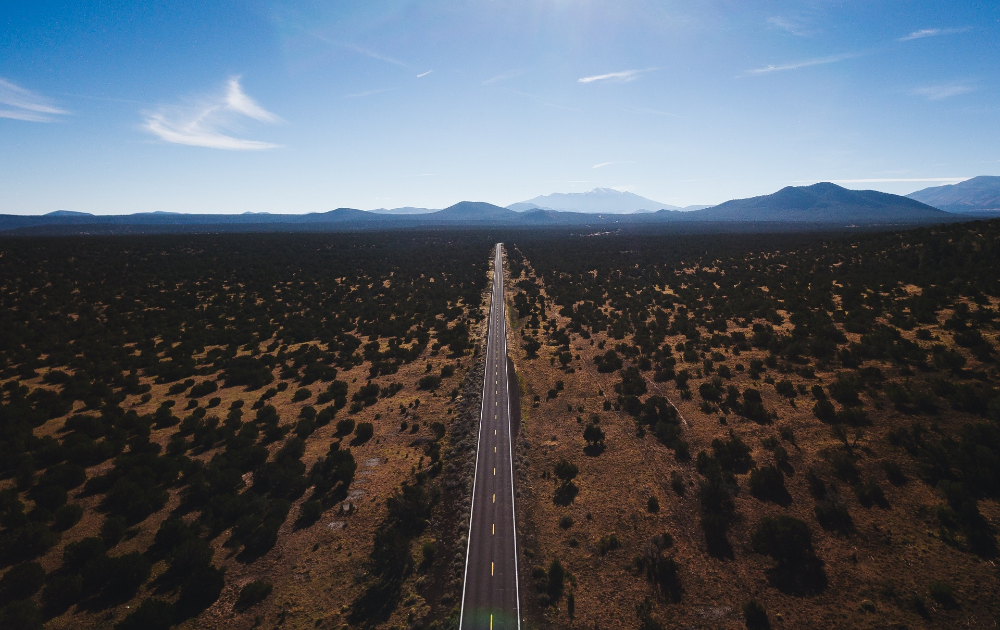

Important Update
May 19th, 2018
Last week the Blue Ridge Fire Department visited our Encampment site and asked us to make a few changes to comply with current fire restrictions. In addition, we’ve clarified some other encampment information:
- All vehicles are required to be parked in a single location. No vehicles will be allowed to remain at your camp site. (We will need to clear the ground in the parking area of any combustible material. If you have someone going up early, we will need help doing that on Tuesday afternoon.)
- Fire restrictions prohibit use of any guns (that includes air rifles). Therefore, we will not be offering the Rifle Shooting merit badge. We are still working on an alternative activity.
- Trail to First Class will be offered at camp. However, you will notice that it does not appear on the merit badge schedule. You will need to decide whether to send a scout to TTFC or to the scheduled merit badge class. Please bring an advancement report from Scoutbook for each young man who you will send to TTFC.
- Forest Service fire restrictions prohibit all traditional campfires. No charcoal cooking is permitted. Propane cooking equipment is allowed as long as the flame can be turned off at any time. When a propane stove or device is used, the area under the device must be cleared of any combustible material. No combustible material is permitted within three feet of the device (above or to the side).
- As suggested by several scoutmasters, Class A uniforms are required for flag ceremonies only. At other times, youth should wear their Class B uniform as follows:
- Wednesday: All should wear their troop Class B shirt
- Thursday: All should wear the Stake Encampment t-shirt
- Friday and Saturday: Ward choice
- For transportation to the Fire Station and Lake Mary, please plan to seat 14 youth. We are still working on the exact assignment.
- Please be sure that every person, both youth and adult, has a camp chair they can carry around with them. The site has many trees, but very little to sit on other than the ground!
- Please be sure to plan for your flag ceremony:
- Suggested outline for a flag ceremony:
- MC calls camp to order
- Color Guard raises/lowers the US flag
- Opening prayer for the day
- Offer a patriotic message (2 minutes)
- Turn time to Camp staff for announcements
- Flag Ceremony assignments:
- Wednesday morning – Higley Groves
- Wednesday evening – Constellation
- Thursday morning – Pioneer
- Thursday evening – 3rd Ward
- Friday morning – Sierra Madre
- Friday evening – Highland Park
- Saturday morning – 6th Ward
- We are looking for pop-up shade structures for the merit badge locations. We have many arranged, but definitely need more. If you know of someone who might have one, please forward their name so we can see if they are willing to lend.
- Please be sure that everyone has a water container they can carry around with them.
- If your ward needs ice for keeping food cold or for drinking water, you’ll need to plan for that. The Happy Jack store is probably the closest source, but their supply may be limited.


About
The Encampment is a long-standing Stake tradition that happens every four years. It’s an opportunity to gather the Young Men of the Stake to enjoy the challenges of high adventure and Boy Scout advancement under the direction and guidance of the Stake Presidency and Stake Young Men Presidency.
Our camp theme is from an October 2011 General conference talk, “It Is Better to Look Up” by Carl B. Cook of the Seventy. Elder Cook describes a conversation with President Thomas S. Monson at a time when Elder Cook was feeling overwhelmed: “He smiled and lovingly suggested, while pointing heavenward, ‘It is better to look up!’”
Elder Cook extended that lesson to all of us, that we should always strive to look to the Savior, especially when we are feeling overwhelmed. He concluded with this testimony:
“We are Heavenly Father’s children. He wants to be a part of our lives, to bless us, and to help us. He will heal our wounds, dry our tears, and help us along our path to return to His presence. As we look to Him, He will lead us.” It is better to look up!
Schedule
To provide a meaningful long-term camp experience for the Deacons, our Aaronic Priesthood Encampment will begin on Tuesday night, May 29, and will conclude in the early afternoon of Saturday, June 2. For Teachers and Priests, camp runs May 30 through June 2. These young men should arrive at camp the afternoon of Wednesday, May 30.
For the Deacons, camp will include merit badge work typical of a BSA camp during the morning hours on Wednesday, Thursday, and Friday. In the afternoons, each ward will be assigned to one of three groups for an assigned activity each day. The three afternoon activities are:
- Service project
- Swimming, Canoeing, or Fishing merit badges at Blue Ridge Reservoir
- Rifle Shooting, Archery, or Horsemanship merit badges at camp
{kind=link}
{kind=link}
 Blue Ridge Reservoir
Blue Ridge Reservoir
Location
Lost Eden, AZ is located at Forest Service Rd 211F, Happy Jack, AZ 86024 (34.632, -111.261).
For a downloadable copy of the map to Lost Eden, click here.
From Gilbert, find your way to Highway 87 North toward Payson.
In Payson, continue on Highway 87 toward Happy Jack.
Turn left on Lake Mary Road at Happy Jack, AZ.
Follow Lake Mary Road for 6.9 miles to Forest Road 81, turn right on FR81.
Continue on FR81 for 0.3 miles to FR211.
Follow FR211 for 5.6 miles.
Follow signs to camp.
For more detailed instructions, click here.